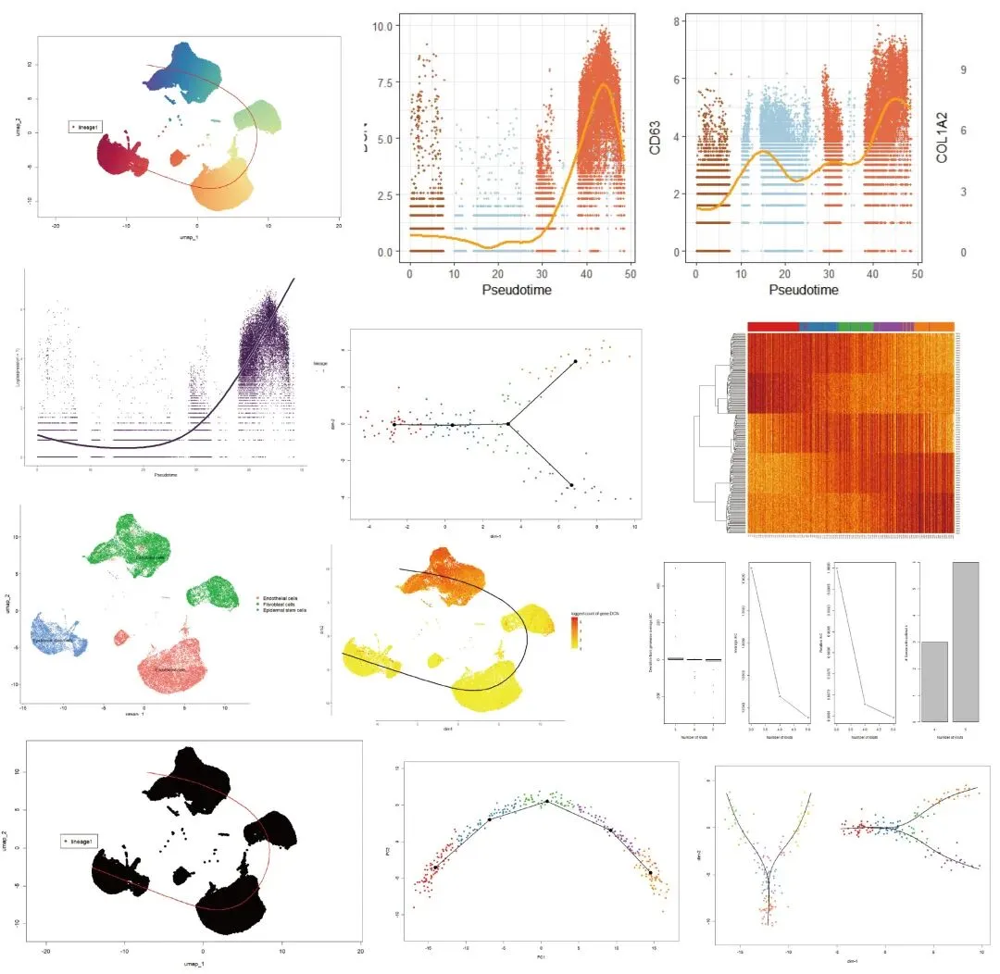
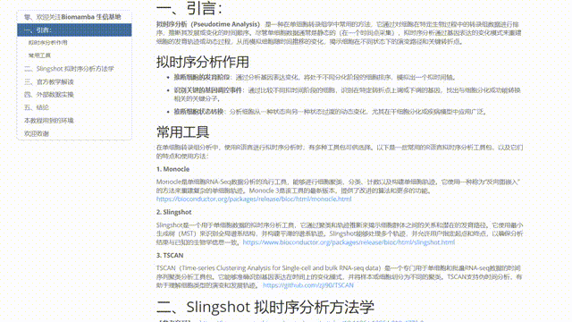
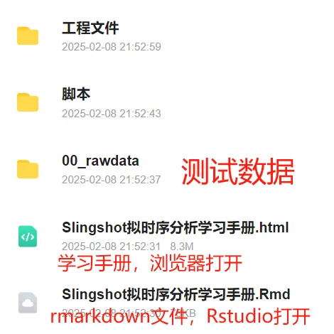

Slingshot拟时序分析学习手册
原文：https://mp.weixin.qq.com/s?__biz=MzAwMzIzOTk5OQ==&mid=2247529396&idx=2&sn=dbbde796be7d76d979265d869094c0f3&chksm=9b3c0ae4ac4b83f2164ad32c0817651099b032fc53e305df9d1f7c048c177bfc6a4f154314eb#rd 合集：单细胞教程全收录

学习手册
 拟时序分析（Pseudotime Analysis） 是一种在单细胞转录组学中常用的方法，它通过对细胞在特定生物过程中的转录组数据进行排序，推断其发展或变化的时间顺序。尽管单细胞数据通常是静态的（在一个时间点采集），拟时序分析通过基因表达的变化模式来重建细胞的发育轨迹或动态过程，从而模拟细胞随时间推移的变化，揭示细胞在不同状态下的演变路径和关键转折点。
拟时序分析可以推断细胞的发育阶段（通过分析基因表达变化，将处于不同分化阶段的细胞排序，模拟出一个拟时间轴），识别关键的基因调控事件（通过比较不同拟时间阶段的细胞，识别在特定转折点上调或下调的基因，找出与细胞分化或功能转换相关的关键分子），推断细胞状态转换（分析细胞从一种状态向另一种状态过渡的动态变化，尤其在干细胞分化或疾病模型中应用广泛）。在单细胞转录组分析中，使用R语言进行拟时序分析时，有多种工具包可供选择，如Monocle，TSCAN，Slingshot 。 Slingshot是一个用于单细胞数据的拟时序分析工具，它通过聚类和轨迹推断来揭示细胞群体之间的关系和潜在的发育路径。它使用最小生成树（MST）来识别全局谱系结构，并构建平滑的谱系轨迹。Slingshot能够处理多个轨迹，并允许用户指定起点和终点，以确保分析结果与已知的生物学信息一致。
本教程基于Linux中的Rstudio环境演示，计算资源不足的同学可参考：
足够支持你完成硕博生涯的生信环境
配置一个心仪的工作站(硬件+环境配置)
独享服务器，生信分析不求人
为实验室准备一份生物信息学不动产
拟时序分析（Pseudotime Analysis） 是一种在单细胞转录组学中常用的方法，它通过对细胞在特定生物过程中的转录组数据进行排序，推断其发展或变化的时间顺序。尽管单细胞数据通常是静态的（在一个时间点采集），拟时序分析通过基因表达的变化模式来重建细胞的发育轨迹或动态过程，从而模拟细胞随时间推移的变化，揭示细胞在不同状态下的演变路径和关键转折点。
拟时序分析可以推断细胞的发育阶段（通过分析基因表达变化，将处于不同分化阶段的细胞排序，模拟出一个拟时间轴），识别关键的基因调控事件（通过比较不同拟时间阶段的细胞，识别在特定转折点上调或下调的基因，找出与细胞分化或功能转换相关的关键分子），推断细胞状态转换（分析细胞从一种状态向另一种状态过渡的动态变化，尤其在干细胞分化或疾病模型中应用广泛）。在单细胞转录组分析中，使用R语言进行拟时序分析时，有多种工具包可供选择，如Monocle，TSCAN，Slingshot 。 Slingshot是一个用于单细胞数据的拟时序分析工具，它通过聚类和轨迹推断来揭示细胞群体之间的关系和潜在的发育路径。它使用最小生成树（MST）来识别全局谱系结构，并构建平滑的谱系轨迹。Slingshot能够处理多个轨迹，并允许用户指定起点和终点，以确保分析结果与已知的生物学信息一致。
本教程基于Linux中的Rstudio环境演示，计算资源不足的同学可参考：
足够支持你完成硕博生涯的生信环境
配置一个心仪的工作站(硬件+环境配置)
独享服务器，生信分析不求人
为实验室准备一份生物信息学不动产
本教程可视化集锦 ：

-Biomamba
所见即所得
学习手册以html文件格式提供，可在浏览器中打开并翻阅学习：

** **
教程目录 ：
一、引言
1.1 拟时序分析的作用 1.2 常用工具
二、Slingshot拟时序分析方法学
2.1 研究背景与目标 2.2 Slingshot方法的核心创新 2.2.1 Slingshot方法的核心创新 2.2.2 伪时间估计 2.2.3 实验验证与参数设置 2.2.4 模拟研究2.3 文章结果介绍 2.3.1 在真实数据集上的噪声鲁棒性 2.3.2 多谱系推理 2.3.3 上游计算选择稳健性 2.3.4 对聚类（方法）的鲁棒性2.4 文章讨论
三、官方教学解读
3.1 介绍 3.1.1 概括 3.1.2 数据下载3.2 上游分析 3.2.1 基因过滤 3.2.2 标准化 3.2.3 降维 3.2.4 细胞聚类3.3 下游分析 3.3.1 识别时间动态基因 3.4 功能详细解说 3.4.1 确定全局谱系结构 3.4.2 构建平滑曲线并排序细胞 3.4.3 在大型数据上云霄Slingshot 3.4.4 多条轨迹 3.4.5 将细胞投射到现有估计上
四、外部数据实操****
4.1 单细胞数据下载 4.2 测序数据预处理 4.2.1 载入相关包 4.2.2 处理各组样本 4.2.3 合并两组数据，构建seurat object 4.2.4 数据标准化 4.3 细胞聚类 4.3.1 细胞簇定义 4.3.2 定义细胞类型 4.3.3 可视化注释结果 4.3.4 显著表达基因可视化 4.4 关键细胞 4.5 拟时序分析 4.5.1 载入相关包 4.5.2 可视化细胞簇 4.5.3 安装slingshot 4.5.4 轨迹推断 4.5.5 可视化计算结果 4.6 探究分化过程中的基因表达 4.6.1 tradeSeq 4.6.2 数据准备 4.6.3 确定最佳模型的参数k 4.6.4 计算伪时间 4.6.5 计算细胞权重 4.6.6 拟合广义加性模型 4.6.7 基因表达与拟时序的相关性 4.6.8 起止点相关性最高的基因 4.6.9 按照相关性排序 4.6.10 使用ggplot2可视化基因表达趋势 4.6.11 绘图
五、结论
六、** 参考 ** 环境版本信息
七、欢迎致谢
文末下载链接中包含的内容：

测试文件约3.63GB ，大家注意按需下载！
解锁前需阅读：2025订阅须知
订阅后获取学习手册下载链接：
请联系[Biomamba_zhushou]获取文件提取码本推送教程二维码:链接:https://pan.baidu.com/s/1ExFv4KQt7NHZ8vbxjXpVPg?pwd
整个2025订阅合集的百度云下载地址可见:
https://pan.baidu.com/s/1yXzQi0zBqh4ZLR6Hznckiw?
-Biomamba